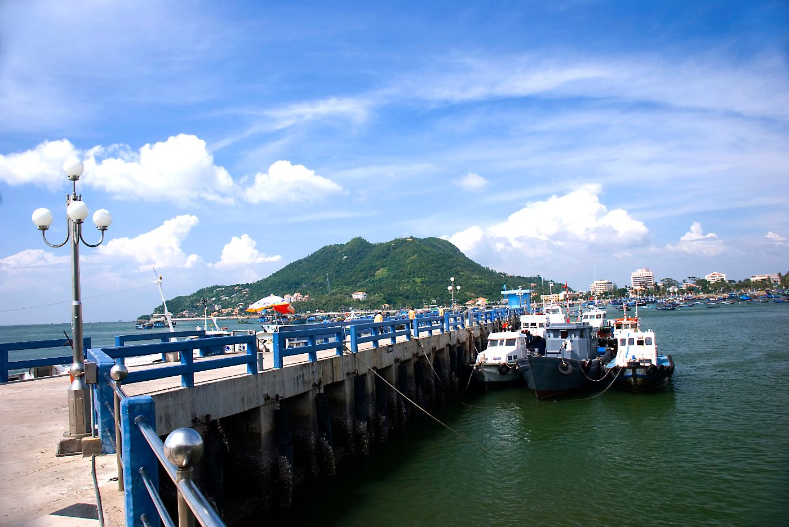
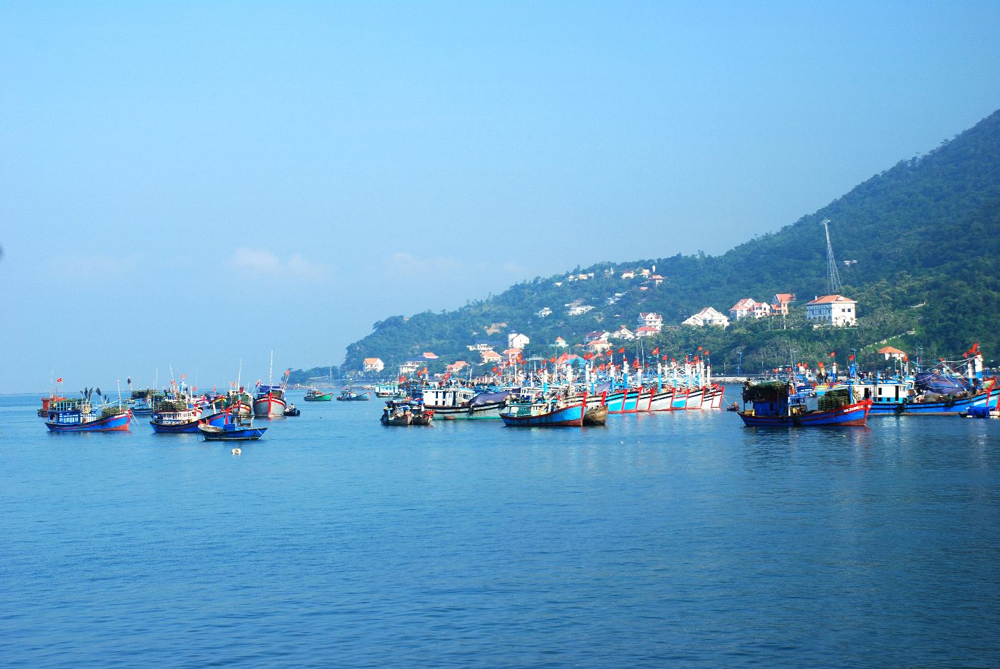
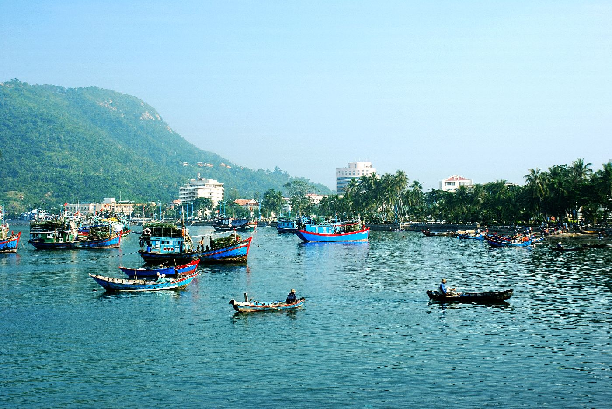
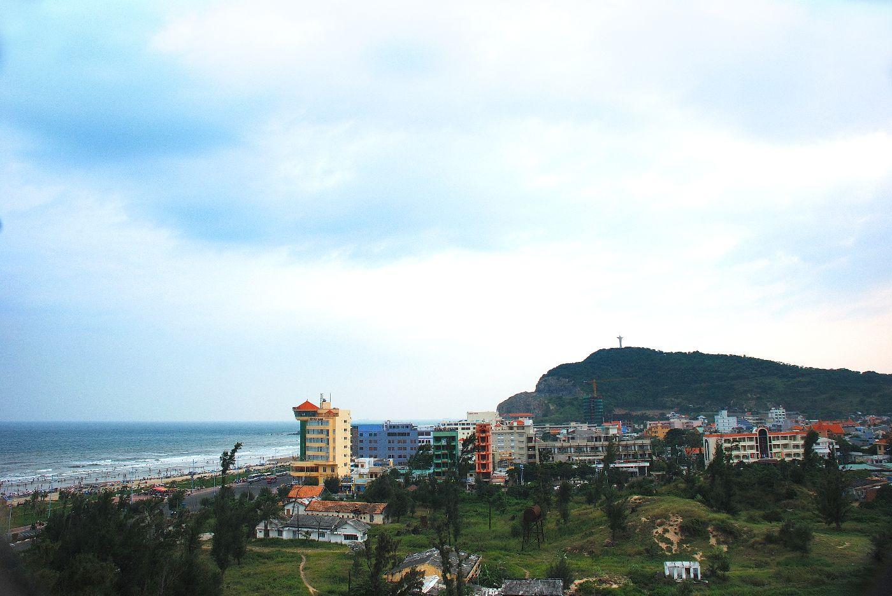

Vũng Tàu
Thành phố biển Vũng Tàu nổi tiếng với dịch vụ du lịch biển, với bãi biển dài và đẹp như bãi Sau, bãi Trước, bãi Dứa, bãi Dâu, bãi biển Chí Linh... Năm 2017, du lịch Vũng Tàu tập trung với du lịch biển hướng đến tiêu chí xanh sạch đẹp.

Vũng Tàu
Thành phố biển Vũng Tàu nổi tiếng với dịch vụ du lịch biển, với bãi biển dài và đẹp như bãi Sau, bãi Trước, bãi Dứa, bãi Dâu, bãi biển Chí Linh... Năm 2017, du lịch Vũng Tàu tập trung với du lịch biển hướng đến tiêu chí xanh sạch đẹp.
Vũng Tàu
Thành phố biển Vũng Tàu nổi tiếng với dịch vụ du lịch biển, với bãi biển dài và đẹp như bãi Sau, bãi Trước, bãi Dứa, bãi Dâu, bãi biển Chí Linh... Năm 2017, du lịch Vũng Tàu tập trung với du lịch biển hướng đến tiêu chí xanh sạch đẹp.
Vũng Tàu Xinh Đẹp
Những bãi tắm tuyệt đẹp nên ghé khi đến Vũng Tàu
Nổi bật nhất là biển Hồ Cốc, một trong những bờ biển được xếp hàng 8 trong danh sách 12 thiên đường giá rẻ bất ngờ do trang Thrillist bình chọn
Bãi Sau trải dài gần 10 km, nằm ở phía Nam Vũng Tàu, kéo dài từ chân Núi Nhỏ ở đầu ngã 3 đường Thùy Vân và Phan Chu Trinh đến khu vực Chí Linh. Bãi Sau được đánh giá là một trong những bãi biển đẹp nhất của Việt Nam. Ưu điểm của bãi biển này là sóng nhẹ, nước luôn trong vắt, có nhiều nhà hàng, khách sạn gần đó.
Bãi Trước là một vịnh nhỏ lặng sóng, nằm giữa Núi Lớn và Núi Nhỏ. Bãi nằm trong khoảng từ đèn Xanh (hay đèn Hàng Hải) tới cầu Đá. Ngoài bãi biển đẹp với cát trắng, biển xanh, nơi này còn được tô điểm vẻ hùng vĩ của núi Lớn và núi Nhỏ và hòn Ngưu nhỏ nhô hẳn ra phía biển. Tuy nhiên, bãi biển này có khá nhiều ghành đá, thích hợp dạo chơi, chụp ảnh, không thể tắm.
Bãi tắm ở Bãi Dứa không rộng, chỉ dành cho chừng 20 - 30 người. Biển nơi đây tuyệt đẹp với những đợt sóng vỗ vào ghềnh đá, không gian thoáng đãng với góc nhìn những con tàu qua lại càng mang đến cho nơi này một sức hút khó cưỡng.
Bãi Vọng Nguyệt nằm dưới chân Núi Nhỏ. Từ bãi có thể nhìn thấy tượng Đức Chúa trên đỉnh núi. Nơi đây có cát trắng, nước trong, sóng nhiều, hiện còn khá hoang sơ. Lý do là muốn đến đây, du khách phải theo đường mòn qua dốc núi. Từ bãi Trước, men theo đường Trần Phú ở ven biển, đi qua Bạch Dinh khoảng 3 km là đến bãi Dâu. Đây là một bãi biển kín gió với các ghềnh đá đủ hình thù kỳ lạ. Địa hình nơi đây dùng để chụp ảnh, vui chơi, không nên tắm.
Bãi Thủy Tiên mới được khai thác trong vài năm trở lại đây nên vẫn chưa có nhiều du khách. Với chiều dài lý tưởng cùng vẻ đẹp nguyên sơ, thơ mộng, nơi đây thích hợp với hầu hết loại hình, dịch vụ hay thể thao biển.
Bãi Chí Linh nằm trong khu du lịch Chí Linh cách thành phố Vũng Tàu khoảng 3 km. Nếu bạn xuất phát từ Sài Gòn theo quốc lộ 51C đến ngã tư Chí Linh (ngang với khu 3 tòa nhà cao ốc 18 tầng) rẽ trái và đi thẳng theo đường nhựa là đến. Với nét đẹp hòa quyện giữa biển, núi và không khí trong mát, nơi đây được nhiều du khách ví như "Đà Lạt giữa biển".
Để đến bãi Đồi Nhái, từ TP Vũng Tàu xuôi theo đường 3/2 chạy đến khi gặp biển báo rồi rẽ vào là gặp. Chưa có bất kỳ hình thức khai thác du lịch hay kinh doanh nên đây được xem là điểm tuyệt vời cho việc cắm trại theo nhóm lớn. Lưu ý bạn nên mang theo nước uống và đồ ăn khi tới đây. Không chỉ là một bãi biển đẹp, hoang sơ và kỳ vĩ, biển Hồ Cốc cũng được xếp thứ 8 trong danh sách 12 thiên đường giá rẻ bất ngờ trên thế giới, là điểm không nên bỏ lỡ của du khách trong năm 2015 do trang Thrillist bình chọn.
Biển Hồ Tràm có khá nhiều điểm cộng với cát trắng, biển xanh, nắng vàng cùng độ sâu và bước sóng lý tưởng. Tuy nhiên, hầu hất các bãi biển hiện nay đều do các resort sở hữu và khai thác.
   Danh Lam Thắng Cảnh Ở Vũng Tàu
|
Tượng Chúa Kito là một trong những địa điểm tham quan Vũng Tàu nổi tiếng, không thể thiếu trong hành trình của du khách khi du lịch Vũng Tàu, bởi cảm giác chinh phục đầy thú vị tại phố biển sôi động này. Tượng Chúa Kito hay còn gọi là tượng Chúa dang tay, là một trong những điểm tham quan Vũng Tàu nổi tiếng được rất nhiều du khách ghé thăm. Nằm trên đỉnh núi Nhỏ, thành phố Vũng Tàu, tượng được xây dựng vào năm 1974. Tượng Chúa Kito có chiều cao 32m, sải tay dài 18,3m đứng trên độ cao 170m, với hướng nhìn ra biển tuyệt đẹp, bên trong là 133 bậc thang lên tận 2 tay của tượng. Đứng ở đây, du khách có thể phóng tầm mắt ra xa, ngắm quang cảnh rộng lớn. Địa chỉ: Nằm ở Thùy Vân, Phường 2, thành phố Vũng Tàu, Bà Rịa – Vũng Tàu Giờ mở cửa: 07h00 sáng – 17h00 chiều Xem Thêm |
|
Trong hành trình du lịch Vũng Tàu, ngoài dịp được thỏa thích nô đùa với sóng biển, chiêm ngưỡng những cảnh quan thiên nhiên tươi đẹp ra thì bạn còn được chinh phục Ngọn hải đăng Vũng Tàu – một trong những địa điểm tham quan thú vị được nhiều du khách lựa chọn. Tháp hải đăng tại địa điểm du lịch Vũng Tàu được nối liền với khu nhà ở của những người vận hành, bằng một đường hầm kiên cố, mang kiến trúc độc đáo. Từ cầu thang xoắn ốc trong lòng ngọn hải đăng, với 55 bậc dẫn lên đến đỉnh tháp, du khách sẽ được tận hưởng làn gió mát rượi thổi vào từ biển khơi, phóng tầm mắt bao quát toàn cảnh non nước của thành phố Vũng Tàu. Địa chỉ: Nằm trên đỉnh núi Nhỏ (hay có tên gọi là núi Tao Phùng), thuộc phường 2, thành phố Vũng Tàu, tỉnh Bà Rịa – Vũng Tàu, Việt Nam Giờ mở cửa: 07h00 sángXem Thêm |
|
Hòn Bà từ lâu đã là 1 địa danh đã không còn quá xa lạ với người dân Vũng Tàu cũng như du khách. Nơi đây không chỉ nổi tiếng bởi vẻ đẹp và sự linh thiêng mà còn nổi tiếng bởi con đường độc đạo giữa biển khơi mà không phải ở đâu cũng có. Hòn Bà là một hòn đảo nhỏ có diện tích khoảng 5.000m2, bạn chỉ mất khoảng 15 phút là có thể tham quan hết đảo. Trên đảo có một ngôi miếu nhỏ gọi là miếu Bà nên Hòn Bà còn là địa điểm du lịch tâm linh của du khách thập phương. Muốn đến được Hòn Bà có hai cách thông thường: Một là đi thuyền, ghe khi nước lớn và cách 2 là đi bộ khi nước ròng Giờ mở cửa: 07h00 sáng – 17h00 chiều Xem Thêm |
|
Bạch Dinh được xây dựng từ năm 1898 đến năm 1902, từng dùng là nơi nghỉ mát cho Toàn quyền Đông Dương, Hoàng đế Bảo Đại và các đời Tổng thống Việt Nam. Nơi đây cũng là nơi chính quyền thuộc địa Pháp làm nơi giam lỏng vua Thành Thái từ ngày 12 tháng 9 năm 1907 đến năm 1916. Bạch Dinh được gọi theo tên tiếng Pháp là Villa Blanche nghĩa là biệt thự trắng, nằm bên sườn núi lớn của thành phố Vũng Tàu tại địa chỉ số 4 đường Trần Phú, P.1, TP. Vũng Tàu. Mặt trước hướng ra biển, lưng tựa vào núi tạo cho Bạch Dinh một thế vững chắc. Bạch Dinh là tòa nhà 3 tầng, cao 19m, dài 25m, toàn bộ ngôi nhà được quét vôi trắng, cửa mái vòm, mái lợp ngói. Khi đến tham quan biệt thự, du khách có thể thấy được kiến trúc Pháp từ hình dáng đến cách bày trí với những mảng viền trang trí rất nghệ thuật. Địa chỉ: số 4 đường Trần Phú, P.1, TP. Vũng Tàu Giờ mở cửa: 07h00 sáng – 22h00 tối Xem Thêm |
5. Khu di tích lịch sử Minh Đạm |
|
|
Nhắc đến những địa điểm du lịch Vũng Tàu nổi tiếng, nhiều người nghĩ ngay đến những bãi biển đẹp, những ngôi chùa uy nghi, thanh thoát, những công trình kiến trúc đồ sộ như ngọn hải đăng, tượng chúa giang tay. Đặc biệt, du khách thường nhắc đến khu di tích lịch sử Minh Đạm, chứng nhân của một thời lịch sử hào hùng ở miền Nam. Nằm ở phía đông nam huyện Đất Đỏ, khu căn cứ Minh Đạm (hay còn gọi núi Minh Đạm) trước kia còn có tên gọi là Châu Long – Châu Viên. Núi Minh Đạm dài 8km và độ cao là 355m, với 3 mặt giáp biển cùng nhiều hang đá lớn nhỏ bí ẩn núp dưới những rừng cây, vách đá, suối nước ngọt róc rách quanh năm. Các tour du lịch Vũng Tàu thường chọn nơi đây là điểm đến để giới thiệu cho du khách về lịch sử chiến đấu của dân tộc cũng như để trải nghiệm sự hoang sơ, mộc mạc của hồn thiêng sông núi. Địa chỉ: Núi Minh Đạm, TT. Long Hải, Huyện Long Điền, Vũng Tàu Giờ mở cửa: 07h00 sáng – 17h00 chiều Xem Thêm |
6. Đền thánh Đức Mẹ Bãi Dâu |
|
|
Đền thánh Đức Mẹ Bãi Dâu là một cụm kiến trúc tôn giáo trên sườn Núi Lớn. Trước đây, người dân địa phương gọi nơi này là Vũng Mây vì trên núi có nhiều cây mây rừng.Đền thánh Đức Mẹ Bãi Dâu là một cụm kiến trúc tôn giáo trên sườn Núi Lớn. Trước đây, người dân địa phương gọi nơi này là Vũng Mây vì trên núi có nhiều cây mây rừng. Đền thánh Đức Mẹ có diện tích 10ha, tọa lạc tại Vũng Mây trên sườn núi Lớn. Đền thánh Đức Mẹ là một quần thể kiến trúc ngoạn mục gồm nhiều công trình tôn giáo hoành tráng, nhìn ra Bãi Dâu nên thường được gọi là Đền thánh Đức Mẹ Bãi Dâu. Địa chỉ: Trần Phú, P. 5, Thành phố Vũng Tàu, T. Bà Rịa - Vũng Tàu Giờ mở cửa: 07h00 sáng – 21h00 tối Xem Thêm |
7. Trận địa pháo cổ Sao Mai - Núi Lớn |
|
|
Trận địa Pháo cổ do thực dân Pháp khởi công năm 1885 và kéo dài trong vòng 15 năm mới hoàn thành, nhằm tạo hành lang an toàn tuyệt đối cho cửa ngõ vùng Đông Nam Bộ . Trận địa pháo này cũng thuộc một trong ba trận địa, tạo thành tuyến phòng thủ Vũng Tàu của người Pháp được xây dựng cùng thời điểm với trận địa pháo cổ Núi Lớn. trận địa pháo Núi Nhỏ có chức năng là chốt tiền tiêu và được bố trí thành ba cụm theo thế vòng cung bao quát cả vùng Biển Đông và Nam Vũng Tàu. Địa chỉ: đường Trần Phú, P. 5, Tp. Vũng Tàu và đường Hạ Long, P. 2, Tp. Vũng Tàu. Giờ mở cửa: 07h00 sáng – 21h00 tối Xem Thêm |